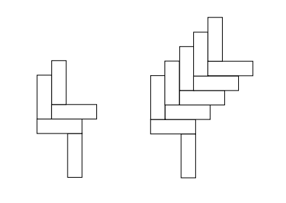
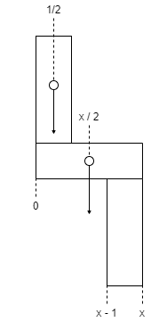
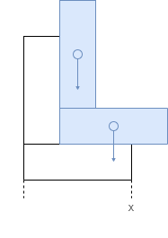

Doubles¶
1. The L-tower problem¶
Introduction
Observe the structures shown in Figure 1. One has 2 L-shapes, the other 5 L-shapes. Consider a tower with k L-shapes. Assume that the blocks are all of size \(x \times 1\) where \(x > 1\). As the picture indicates, if k is too small then the tower falls to the left. On the other hand, if k is too large the tower would fall to the right. Will the tower be stable for some k? Prove there is at least one value of k for which the L-tower is stable. Assume that a structure is stable if and only if its center of gravity is not hanging in the air horizontally. The L-tower is stable if and only if each of its subparts is stable.
Hint: Show the tower is stable if and only if \({3x - 3 \over 2} \le k \le {3x - 1 \over 2}\).
First, consider a single L-shape.
If we calculate from the bottom left corner being zero, its horizontal center of mass is an average of the two blocks. The horizontal block has a center at \({x \over 2}\). The vertical block has a center at \({1 \over 2}\) since the block is defined as having a width of 1.
As an average this works out to;
Now consider an L-shape above the first L-shape.
We can calculate the combined horizontal center of mass as follows;
Note that center of mass has increased by \({1 \over 2}\) to the right. Any L-shapes above the first one must have their combined center of mass less than or equal to x, otherwise they will fall to the right.
In general, the center of mass for a k L-shape configuration, \(c_k\), can be calculated as follows,
For the k L-shape not to fall to the left, the center of mass must not to be further left than the left edge of the initial vertical block, and to not fall to the right the center of mass must not be further than the right edge. This can be expressed as the condition,
An increase in k moves the center of mass \({1 \over 2}\) to the right, so we can calculate \(c_{k - 1}\) as,
For any stable k L-tower, we can then say
This is a stricter upper bound on \(c_k\), which gives us,
That can be solved for k as follows,
We can then work out the difference between the upper and lowers bounds,
If x is an odd integer, then stable values for k are the lower bound, the midpoint and the upper bound, or \(\lbrack x - 1, x - {1 \over 2}, x \rbrack\), because the bounds will evaluate to an even number, y.
If x is anything else, however, then there are two stable values for k, \(\lbrack y, z \rbrack\), where \(x - 1 < y < x - {1 \over 2}\) and \(z = y + {1 \over 2}\).
Double Sums¶
Intro
Sometimes we have to evaluate sums of sums, otherwise known as double summations. It’s good to know how to tame these beasts! Here’s an example of a double summation:
It looks ferocious…all those sharp teeth! But actually, this double summation is just a sheep in wolf’s clothing: to evaluate it, we can just evaluate the inner sum, replace it with a closed form we already know, and then evaluate the outer sum which no longer has a summation inside it.
Question
Evaluate the summation. (Hint: \(\sum (a + b) = \sum a + \sum b\).)
Intro
Unfortunately, not all summations are so docile. Fortunately, we have ways to deal with this. There’s a special trick that is often extremely useful for sums, and that is to exchange the order of summation. We’ll go through an example here. For the remainder of the problem we’ll wrestle with the sum of the harmonic numbers:
At first glance, it looks like just a single summation, but do not be deceived.
Question
First, write it as a double summation.
Question
Now try to gain some intuition for exactly what you’re up against by integrating the summation in its less threatening single-summation form. You may use \(H_k \approx \ln k\).
The given solution is;
However, if we use \(n = 3\)
sumlimits^{3}_{k=1} ln k = ln 1 + ln 2 + ln 3 = 0 + 0.69… + 1.09… = 1.79…
n ln n - n + 1 = 3 ln 3 - 3 + 1 = 1.29…
So I don’t understand how they got their solution, and their solution appears to be incorrect anyway. It’s obviously wrong because \(H_1 = 1\), but \(\ln 1 = 0\), which is nowhere near approximately correct.
Question
Finally, we’ll look for an exact answer. If we think about the pairs (k, j) over which we are summing, they form a triangle in the table below. The values in the cells of the table correspond to the terms in the double summation. The first two rows have been filled in for you. Complete the remaining three rows to see the pattern.
\({j \over k}\) |
1 |
2 |
3 |
4 |
… |
n |
|---|---|---|---|---|---|---|
1 |
1 |
|||||
2 |
1 |
\({1 \over 2}\) |
||||
3 |
1 |
\({1 \over 2}\) |
\({1 \over 3}\) |
|||
4 |
1 |
\({1 \over 2}\) |
\({1 \over 3}\) |
\({1 \over 4}\) |
||
… |
||||||
n |
1 |
\({1 \over 2}\) |
\({1 \over 3}\) |
\({1 \over 4}\) |
\({1 \over n}\) |
Question
The summation above is summing each row and then adding the row sums. But we can tame this beast if, instead, we first sum the columns and then add the column sums. Use the table to rewrite the double summation. The inner summation should sum over k, and the outer summation should sum over j.
Question
Now simplify the summation to derive a closed form in terms of n and \(H_n\).